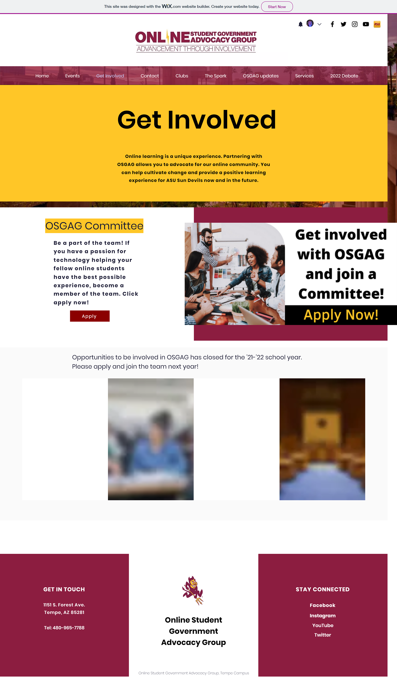

Director of Website and Content Management
The Client:
Arizona State University's Online Student Government Advocacy Group (OSGAG)
The Ask:
In the 2021-2022 academic year, I served as the Director of Website and Content Management for the Online Student Government Advocacy Group.
The Online Student Government Advocacy Group (OSGAG) asked me to bring their current site up to brand standards, improve the imaging and content layout, and add content. My main focuses were the Home page and Get Involved page.
Working with existing brand assets, I updated the pages to better represent the Online Student Government and its advocacy work.
Projects:
- "Home" Page
- "Get Involved" Page
Project 1: "Home" Page
The images previously used were stock images and were more representative of students of high school or middle school age. Updating the images to thoes from previous OSGAG events better represented the clientele.
The typefaces and colors were stock typefaces and colors. Utilizing the approved OSGAG branding guidelines, the typeface and color scheme were updated to create a cohesive design that better represents the brand and goals of the organization.

Project 2: "Get Involved" Page
Much like for the Home Page project, the Get Involved page was updated with images that better represented the clientele and incorporated colors and typefaces approved for use in the OSGAG branding guidelines. On the Get Involved page, specific calls to action and links to more information were added to drive student engagement and involvement.
